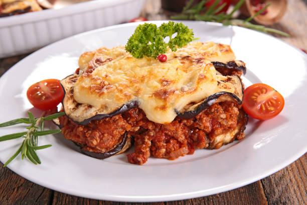

Patlıcan musakka hemen hemen herkesin lezzetine hayran olduğu enfes tariflerden biri. İçerisindeki kıymalı harç ve patlıcanın birlikte uyumu tüm damaklara şenlik yaratan türden.
Ptlıcan ve et ikilisi yemeklerini kim sevmezki. Hadi tarife geçelim o zaman..

Patlıcan musakka
Malzemeler
- 4 adet büyük boy patlıcan
- 500 gram az yağlı kıyma
- 3 diş sarımsak
- 2 adet domates
- 3 yemek kaşığı zeytinyağı
- 1 adet büyük boy soğan
- 1,5 yemek kaşığı domates salçası
- 1,5 su bardağı sıcak su
- 1/3 demet maydanoz
- 1 çay kaşığı karabiber
- 1 çay kaşığı pul biber
- 1 çay kaşığı tuz
Nasıl yapılır?
- Patlıcanları alacalı bir şekilde soyun. 1 parmak kalınlığında yuvarlak şekilde doğrayın.
- Kızgın yağda arkalı önlü kızartın ve kağıt havlu serili bir kaba alıp, fazla yağını çektirin.
- Soğanı yemeklik doğrayın. Sarımsakları ince ince doğrayın veya ezin. Domatesleri küp küp doğrayın. Maydanozları ince bir şekilde kıyın.
- Geniş tabanlı bir tencerede zeytinyağını kızdırın. Kıymayı ekleyin ve tane tane olana kadar kavurun. Ardından soğanları ve sarımsakları ekleyin. Kavurmaya devam edin.
- Domatesleri ve baharatları ekleyerek 3-4 dakika karıştırın. Maydanozları da ekleyerek ocaktan alın.
- Bir borcama kızarmış patlıcan dilimlerini dizin. Kıymayı üzerine boşaltın ve yayın.
- Ayrı bir kapta salça ve biraz tuza sıcak suyu ekleyerek salçayı açın.
- Ardından üzerine gezdirin. Çeri domates ve biberlerle süsleyin.
- Önceden ısıtılmış 180 derecelik fırında 30 dakika kadar pişirin. Fırında alıp servis edebilirsiniz.
İŞTE PÜF NOKTALAR!!!
- Patlıcanları kızarttıktan sonra fazla yağını çektirmek için muhakkak kağıt havlu serili bir tabakta bir süre bekletin.
- Dilerseniz yanında sarımsaklı yoğurtla da lezzetii kiye katlayabilirsiniz.
AFİYET OLSUN